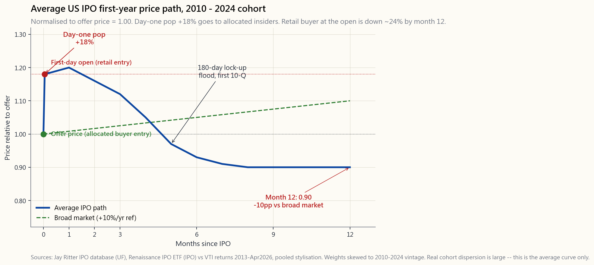
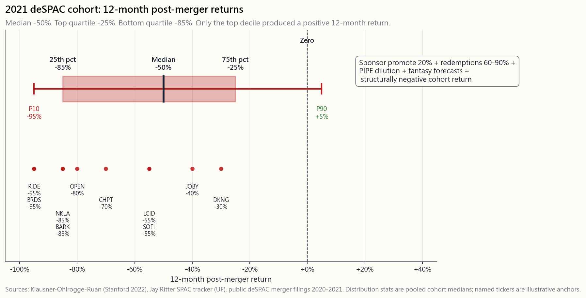

Side Lesson 13: IPOs and SPACs — The Math and the Hype
1. Why This Is Important
Roughly 150 to 250 companies go public on US exchanges in a normal year. In bubble years it is closer to 600. The marketing materials — glossy roadshow decks, breathless CNBC segments, "lottery ticket" allocation chatter at the brokerage — are designed to make every single one of those listings feel like the next Amazon. The data, which goes back to Jay Ritter's IPO database at the University of Florida and now spans more than five thousand US offerings, says something else entirely: **the average IPO buyer who shows up on day one underperforms the broad market by about 10 percentage points over the following year**, and the dispersion is brutal.
This is one of the cleanest examples in the curriculum of two hard truths colliding — alpha is rare and *the irrational version of you can liquidate the rational one*. The IPO window is engineered to extract excitement from retail investors at the most dangerous price the security will ever trade at. Knowing how the machine works is how you stop being its product.
Four reasons this lesson earns a slot:
IPOs from 2019-2024 went almost entirely to underwriter clients who got allocated shares at the offer price. Retail investors who buy when the stock opens for trading bought at the post-pop price — i.e., they are the ones who paid the +18%.
shown up in every five-year window Ritter has measured back to 1980. The Renaissance IPO ETF (ticker IPO) — which holds new listings systematically — has underperformed VTI by about 5%/yr since its 2013 inception.
completed deSPAC mergers has a median 12-month return after the merger of roughly -50%. The bottom quartile is closer to -85%. This is not noise; it is the structure of the vehicle.
least one quarterly earnings cycle. Then evaluate the stock as you would any other public company — using Week 8 (financial statements) and Week 21 (valuation) as your toolkit. The IPO window itself is for traders, allocators, and sponsors. The post-IPO market is for investors.
2. What You Need to Know
2.1 How a Traditional IPO Actually Works
The textbook version is "the company sells shares to the public." The real machinery has six steps and three sets of incentives that matter for understanding why prices behave the way they do:
by Goldman Sachs, Morgan Stanley, JP Morgan, or BofA. The lead underwriter takes a 5-7% gross spread on the offering and effectively decides the price.
underwriter shows the deck to perhaps 100-200 institutional investors — large mutual funds, hedge funds, sovereign wealth funds. Those institutions submit indications of interest at various price points. The underwriter assembles the "book" — a demand curve.
company set the offer price. Crucially, the underwriter *consistently prices the deal below the level the book would support* — typically by 10-20%. This is called intentional underpricing.
this is a discretionary process. Shares go to favoured clients: the institutions that pay the firm the most commission, the ones that participate in the next deal, the ones that hold long-term without flipping. Retail allocations on hot deals are typically under 10% of the book and skew to the underwriter's wealth- management arm.
price the order book on the exchange clears. If the deal was priced at $20 and there is real demand, the open might be $24 — a 20% pop. The institutional allocation just made an instant 20% gain on paper.
contractually cannot sell their shares for 90 to 180 days. When the lock-up expires, a flood of insider supply hits the market. Lock-up expiry days are statistically associated with negative returns of 1-3% on average; the best-known IPOs sometimes drop more.
The economics for the underwriter are: collect a 5-7% spread, hand favoured clients a guaranteed +18% pop on average, get rewarded with trading commissions on the next deal, and never carry the inventory risk that an honest market-maker would. The economics for the company are: leave 18% of the day-one market cap on the table in exchange for a roadshow, regulatory cover, and an institutional shareholder base. The economics for retail buying at the open are: pay the post-pop price and discover that the average IPO from this vintage will trail the market by 10 points over the next year.

2.2 The First-Day Pop — Why It Exists and Who Captures It
The "average +18%" first-day pop is one of the most stable empirical facts in capital markets. Ritter's running average for US IPOs is:
- 1980-2000: +21% average first-day return
- 2001-2018: +14% average first-day return
- 2019-2021: +37% average (the COVID/SPAC-adjacent bubble)
- 2022-2024: +12% average (post-bubble normal)
distinguish "informed" from "uninformed" buyers in their book. Underpricing compensates uninformed institutions for the risk of being adversely allocated cold deals.
the offer price — a "broken IPO" — damages the underwriter's franchise. Pricing 18% under fair value is cheap insurance.
gift to favoured clients. This bundles the IPO business with trading commissions, prime-brokerage relationships, and future deal participation. Retail does not pay commissions to investment banks; therefore retail does not get the gift.
The clean test of whether retail captures the pop: look at the return from the first-day opening price — the price retail can actually buy at — to one year later. That number is **approximately -10% relative to the broad market** in pooled US data 1980-2024. The +18% pop is a coupon paid by the company to allocated institutional clients. Retail pays full price.
2.3 The One-Year Underperformance Pattern
The pooled US IPO record from Ritter's dataset, measured from the first-day closing price to twelve months later relative to a matching size/style benchmark:
- Average: -10% three-year cumulative underperformance vs.
- Median: worse than -15% relative to the index — the
- Hit rate: only about 35% of IPO buyers at the first-day close
- Vehicle proxy: the Renaissance IPO ETF (IPO), which buys all
The reasons IPOs underperform are not mysterious:
benefit. They go public when their sector is hot and their recent operating numbers look great. Both conditions tend to mean-revert.
typically 200+ pages of risks, related-party transactions, and accounting choices. Retail does not read it. The first earnings call after the IPO is usually where reality lands.
gains they cannot sell. The market knows this, and prices in selling pressure ahead of expiry.
bank are required to wait 25 days before publishing research, and their initial coverage is overwhelmingly Buy-rated. The first downgrade from a major bank is often the moment the stock breaks.
Horace's framing: the IPO market is a beauty contest where the contestants — companies — get to choose the day they walk on stage and their hairstylists get to set the lighting. The judges — retail investors who buy in the open market — show up after the performance has been engineered. There is alpha here for the underwriter, the allocated institutions, and the company itself. There is on average negative alpha for the post-pop buyer.
There is a deeper version of the same point that connects this lesson to the rest of the course. The contrarian trade — the one that pays — is not buying brand-new listings on day one. It is buying abandoned names: the index deletion, the sector the model portfolios just dumped, the unloved compounder that nobody wants this quarter. Those are the cleanest mispricings the passive machinery itself creates, and they show up at the opposite end of the lifecycle from an IPO. Day-one IPO buying is the trade that looks contrarian — small, new, undiscovered — and is in fact the maximally crowded one, with the entire roadshow pointed at extracting your enthusiasm at the highest price the security will ever trade at. Same instinct, exact wrong end of the curve.
And then the size cut. Most IPOs in any given year price below a $1B market cap, and many of the rest are unseasoned even when the nominal cap is larger — wide bid-ask, manipulable float, thin disclosures, dominant participants who are not investors. That is my no-penny-stock rule with a different label on it. The sub-billion universe is the casino tier whether it arrives via an OTC listing, a hot IPO, or a deSPAC merger; the rule does not care which door it walks through. If you would not buy a $400M micro-cap on the open exchange, you should not buy a $400M company because someone put a roadshow deck in front of you the week before. The price tag is the same; only the marketing changed.
2.4 SPACs: The 2020-2021 Bubble
A Special Purpose Acquisition Company (SPAC) is a shell entity that raises cash in a vanilla IPO at $10 per share, parks the cash in T-bills, and then has up to two years to find a private company to merge with. When the merger closes — the "deSPAC" event — the private company becomes public via the shell.
The structural features that matter:
the shell) gets 20% of the post-IPO equity for nominal capital. This is an enormous transfer of value, paid for by the shareholders of the target company.
the merger vote and also keep the warrants attached to their original IPO units. This means the sophisticated SPAC arbitrage trade is essentially risk-free: buy at $10, redeem at $10 plus T-bill interest, keep free warrants. Hedge funds dominate this trade. By the time of the merger vote, the cash on the balance sheet is often 60-90% redeemed — meaning the deSPAC company arrives with a fraction of the cash it advertised.
forward-looking financial projections in the proxy statement. This regulatory loophole produced extraordinary fantasy forecasting in 2020-2021 — pre-revenue companies projecting eight-figure earnings five years out.
typically arranged alongside the merger to backfill the cash that gets redeemed. PIPE investors usually get a discounted price ($8 or $9 vs the $10 nominal), further diluting public shareholders.
The SPAC boom of 2020-2021 produced 613 SPAC IPOs in 2021 alone versus 248 traditional IPOs that year. Most of those SPACs either liquidated (failed to find a merger) or completed mergers that performed disastrously. The de Bakker / Klausner / Ohlrogge "Spac Law and Myth" papers and Jay Ritter's SPAC tracker put the median 12-month post-merger return for the 2020-2021 cohort at roughly -50%, with the bottom quartile worse than -85%.

The takeaway is structural, not cyclical: even in the absence of a mania, SPACs transfer roughly 20-30% of public-shareholder value into sponsor and PIPE pockets before the underlying business has a chance to perform. The mania of 2021 simply made the transfer gigantic. The rational trade is the SPAC arbitrage that hedge funds run; the retail trade is buying the post-merger common, which is the structurally losing side.
2.5 Direct Listings — Bypassing the Underwriter Pop
Spotify (April 2018), Slack (June 2019), Palantir (September 2020), Coinbase (April 2021), and Roblox (March 2021) all went public via direct listing — no underwriter, no allocation, no first-day pop, no lock-up structured the traditional way. The mechanics:
listing day. There is no offer price; the exchange uses an opening auction to determine the first trade.
though banks are still hired as financial advisors at lower fees (typically 1% vs the 5-7% IPO spread).
The economic argument: direct listing avoids leaving the +18% pop on the table. In Spotify's case the company estimated it would have left close to $1 billion of value with allocated underwriter clients under a traditional IPO; direct listing kept that value with existing shareholders.
The empirical record on direct listings is short and mixed:
- Spotify: opened $165, traded as low as $109 (-34%) in late 2018,
- Slack: opened $42, was bought by Salesforce 2.5 years later for
- Coinbase: opened $381, traded down 80%+ to under $50 in late
- Palantir: opened $10, currently around $130 — one of the few
For the retail post-IPO investor, the direct-listing mechanism does not change the evaluation problem. The first earnings cycle still has to happen. The valuation still has to be justified by future cash flows. The base rate for newly public companies underperforming in the first 12 months still applies.
2.6 The Retail Playbook
Three rules.
Rule 1: Wait six months. Let the lock-up expire (90 or 180 days). Let at least one quarterly earnings release come out as a public company. Let the sell-side analysts initiate coverage and let the first downgrade land. Most of the structural overhang clears inside 90-180 days; the rest clears after the first earnings disappointment. The expected return from the first-day open to the six-month mark is roughly zero in pooled data — you are not giving up upside by waiting; you are skipping the noisiest window.
Rule 2: Evaluate the stock the way you evaluate any other stock. Once a name has reported one or two quarters of public financials, you can apply the Week 8 (financial statements) and Week 21 (DCF) toolkit. If the metrics look good and the price embeds a defensible growth path, buy it the same way you would buy any other equity. If the price still embeds the IPO-day excitement multiple, pass.
**Rule 3: If you must play the IPO window, size it like the lottery ticket it is.** No more than 1-2% of the portfolio in any single newly-public name. Treat it as a Tranche 4 / opportunistic allocation. Never use leverage. Never use a margin account for IPO buying. Never replace your indexed core with a basket of recent IPOs.
The Renaissance IPO ETF is available and arguably superior to hand-picking IPOs (it diversifies across the full cohort). Its record — 5%/yr drag versus VTI — is the best-case outcome for a systematic IPO strategy. The hand-picked IPO portfolio of a typical retail investor is statistically much worse, because selection bias pushes the picks toward the most exciting (and therefore most overpriced) names.
3. Common Misconceptions
1. "I can buy at the IPO price through my broker." Almost certainly not. Retail allocations on hot deals are well under 10% of the book and concentrate at the underwriter's own wealth management arm. The "IPO access" feature on retail platforms is best-efforts; you typically get filled only on the deals nobody else wants.
2. "The first-day pop proves the company is undervalued." It proves the underwriter underpriced the deal — deliberately, as a gift to favoured clients. The pop is paid by the company, captured by allocated institutions, and largely missed by retail.
3. "If I miss the IPO, I miss the run." The Renaissance IPO ETF buys after the first close — the same entry point a retail investor gets — and underperforms the market by roughly 5%/yr. There is no systematic "IPO run" that retail captures; the run is the +18% pop that already happened by the time you can place an order.
4. "SPACs are like a private equity fund I can buy." No. A SPAC sponsor takes 20% of the equity for nominal capital. A real PE fund's GP is paid 2 and 20 on contributed capital, vests over time, and the GP is investing alongside the LPs. The sponsor promote is a one-shot 20% gift to the SPAC sponsor that hits public shareholders on day one of the merger.
5. "The redemption right protects SPAC shareholders." It protects the original SPAC IPO shareholders, who can pull their $10 out before the merger vote. It does not protect the post-merger common shareholder — the person who bought the deSPAC stock at $15 in the secondary market. By that point the cash is gone, the warrants are out, the dilution is locked in.
6. "Direct listings are riskier than IPOs." They are different, not riskier. There is no underwriter buying shares to support the deal in the early days, but there is also no lock-up flood at day 90 and no allocated-insider gift transfer. The post-listing fundamentals do all the heavy lifting in either mechanism.
**7. "I should buy the IPO of the next Amazon, Google, or Tesla."** Survivorship bias. For every Amazon there are 100 Pets.com, Webvan, eToys.com, and Vonage. The base-rate retail return on hand-picked IPOs is negative; the few moonshots do not compensate.
8. "Spin-offs are like IPOs." They are not, and the empirical record is the opposite: spin-offs from large parents have outperformed the market by 3-5%/yr in the following two years (Cusatis-Miles-Woolridge 1993 and successors). Spin-offs are covered in their own side lesson; IPOs and SPACs are this lesson.
9. "Lock-up expiry is priced in." Partially. The day itself is typically associated with -1% to -3% returns; in the worst names — ones with very thin float pre-expiry and large insider stakes — the selloff into expiry can run 10-20%. The market knows it is coming; that does not eliminate the price effect.
10. "Just buy IPOs through the ETF and forget it." A defensible position. The Renaissance IPO ETF (IPO) is at least diversified and mechanical. Just understand: you are paying a 0.60% expense ratio to systematically underperform VTI by about 5%/yr. The diversification is genuine; the alpha is negative. If you want exposure to the factor without the negative alpha, just hold VTI — the next Microsoft is already inside it.
4. Q&A
Q1: What was the average IPO first-day pop in 2024?
About +12% for traditional IPOs, well below the +37% of the 2020-2021 bubble but in line with the long-run 1980-2024 average of roughly +18%.
Q2: How long is the typical lock-up?
90 days is now common for direct listings and a growing number of traditional IPOs. 180 days remains the historical default for traditional IPOs and is still the most frequent. Some deals incorporate staggered releases — e.g., 25% at 90 days, balance at 180 days.
Q3: What is the Renaissance IPO ETF and should I buy it?
Ticker IPO. Holds the largest US IPOs after their first-day close and rebalances quarterly, dropping names after about two years. Expense ratio 0.60%. Has compounded at roughly 9%/yr since September 2013 versus VTI at roughly 14%/yr — a 5%/yr drag. As a diagnostic of "IPOs as an asset class" the answer is: do not overweight them. As an active position, only if you specifically want a thematic newly-public-company tilt and are willing to give up 5%/yr to get it.
Q4: Can I short an IPO?
Not on day one — the shares typically have to settle for several days before they are available to borrow. By the time you can short, the easy mean-reversion trade has often happened. Some hedge funds short via single-stock options or futures on the underlying index to fade the IPO pop in the broad sense. Retail investors generally should not short newly-public stocks; the borrow cost can spike to 50%+ annualised on hot names and the upside risk is unbounded.
**Q5: What is the difference between an IPO and a follow-on offering?**
An IPO is the first time the company sells shares to the public. A follow-on (or secondary) offering is a subsequent capital raise once the company is already public. Follow-ons typically price at small discounts (3-5%) to the prevailing market and do not exhibit the +18% pop pattern of IPOs because there is already a market clearing price. The selection effects are also different — companies do follow-ons when they need cash, which can be a negative signal.
**Q6: Why are SPACs so bad for retail when hedge funds use them profitably?**
They are bad for retail buying the post-merger common (the deSPAC stock at $15 in the secondary market). They are good for hedge funds running the SPAC arbitrage at $10 (redeem your money back, keep the free warrants). These are two completely different trades. The structure that makes the arbitrage work — sponsor promote, dilutive warrants, PIPE backstop — is exactly the structure that hits the post-merger common.
Q7: What about IPOs of foreign companies on US exchanges?
US-listed IPOs of foreign issuers (especially from China — Alibaba, DiDi, Luckin) have broadly the same first-day pop pattern but worse one-year underperformance and substantially worse fraud risk. The US-investable universe should be your benchmark; if you must touch foreign IPOs, treat them as Tranche 4 opportunistic positions with even tighter sizing.
Q8: How do I read an S-1?
If you only read three sections: (1) Risk Factors — the legally mandated list of everything that could go wrong. (2) Use of Proceeds — how the company plans to spend the cash you are giving it (paying down debt and cashing out insiders is bad; growth capex is good). (3) Management's Discussion and Analysis — the prose explanation of the financials, including any qualifiers about non-recurring items. The Side Lesson 02 (Reading 10-Ks) toolkit applies directly to S-1s; the structure is similar.
Q9: What about IPOs in tax-advantaged accounts?
A single IPO position is exactly the kind of high-variance opportunistic bet that should go in a Roth IRA if you are going to take it (tax location matters). The expected return is mediocre but the variance is enormous; a 10x bagger in a Roth is forever tax-free. A 10x bagger in a taxable account costs 23.8% LTCG when you sell. That said: this is sizing advice for a position you would have taken anyway, not a reason to take the position.
Q10: What does the interactive lab show me?
It compares two strategies: an allocated investor (gets shares at the offer price, captures the +18% pop) and a retail day-one investor (buys at the post-pop open price). You set the assumed first-day pop, the lock-up overhang drift through month 6, and your holding horizon. The lab computes the terminal wealth on $10,000 deployed under each strategy. The default settings reproduce the empirical pattern: the allocated investor finishes the year up, the retail day-one investor finishes the year down by roughly the historical 10%.
補充課堂 13：首次公開招股與SPAC——數學與炒作
1. 為何此課題值得關注
在正常年份，美國交易所約有150至250家公司上市。在泡沫年份，數字接近600。那些宣傳材料——光鮮亮麗的路演簡報、CNBC的激情報道、各大經紀平台的「彩票式」配售話題——無一例外地把每一次上市都塑造成下一個亞馬遜。然而，Jay Ritter在佛羅里達大學建立、現已涵蓋逾五千個美國上市案例的首次公開招股數據庫卻說了一個截然不同的故事：在首日入市的平均首次公開招股買家，在隨後一年的表現比大市落後約10個百分點，而且個別差異極為懸殊。
這是本課程中最清晰的例子之一，兩個殘酷的真相在此交匯——阿爾法極為罕見，而且非理性的你能夠清算理性的你。首次公開招股視窗是專門設計來在證券最危險的定價時刻榨取散戶熱情的。了解這部機器的運作方式，才能讓你不再成為它的獵物。
此課題獲納入課程，有四個原因：
2. 你需要了解的知識
2.1 傳統首次公開招股的實際運作
教科書版本是「公司向公眾出售股份」。現實機制有六個步驟和三組激勵結構，理解它們對於掌握股價行為至關重要：
對承銷商而言，經濟利益是：收取5至7%的差價，向優先客戶贈送平均+18%的即時升幅，以換取下一筆交易的交易佣金，且從不承擔誠實做市商應承擔的存貨風險。對公司而言：以18%的首日市值作為代價，換取路演、監管配合及機構股東基礎。對在開市後買入的散戶而言：支付升市後的價格，並發現這個年份平均首次公開招股的表現在未來一年落後大市10個百分點。
2.2 首日升幅——存在的原因及誰能從中獲益
「平均+18%」的首日升幅是資本市場最穩定的實證規律之一。Ritter的美國首次公開招股滾動平均數據如下：
- 1980至2000年： 平均首日回報+21%
- 2001至2018年： 平均首日回報+14%
- 2019至2021年： 平均+37%（新冠疫情及SPAC相關的泡沫）
- 2022至2024年： 平均+12%（後泡沫正常水平）
測試散戶能否從升幅中獲益的直接方法：觀察從首日開市價——即散戶實際可買入的價格——到一年後的回報。根據1980至2024年的美國匯總數據，這個數字相對大市約為-10%。+18%的升幅是公司支付給獲分配機構客戶的酬謝。散戶付的是全價。
2.3 首年跑輸大市的規律
根據Ritter數據庫的美國首次公開招股匯總紀錄，以首日收市價為基準，12個月後相對於相近規模及風格基準的表現：
- 平均： 相對大市的三年累計跑輸-10%，當中大約一半在首年出現。
- 中位數： 相對指數跑輸超過-15%——分佈呈右偏態（少數巨大贏家拉高了平均值）。
- 命中率： 只有約35%在首日收市買入的首次公開招股買家能在隨後12個月跑贏大市。
- 工具代理： Renaissance IPO交易所買賣基金（IPO）在所有美國首次公開招股的首日收市後買入，自2013年9月成立以來的複合年化回報約為9%，同期VTI約為14%——每年拖累5%，計費前。
陳馬的比喻：首次公開招股市場是一場選美比賽，參賽者——企業——可以選擇登台的日期，其造型師可以設定燈光效果。評審——在公開市場買入的散戶——是在演出被精心安排後才登場。對承銷商、獲配售的機構及公司本身而言，這裡存在阿爾法。對於升市後才買入的人而言，平均而言存在負阿爾法。
同一論點還有更深層的版本，將這節課與整個課程的其餘部分聯繫起來。反向的交易——那個真正有回報的交易——不是在首日買入全新上市的公司，而是買入被遺棄的名字：被指數剔除的股票、模型投資組合剛剛拋售的板塊、本季度無人問津的低調複利型企業。那些才是被動投資機器本身製造的最清晰的錯誤定價，而且它們出現在生命週期的反面，與首次公開招股截然相反。首日首次公開招股的買入交易看似反向——細小、嶄新、尚未被發掘——實際上卻是最擁擠的交易，整個路演都指向在該證券曾達到最高價格時榨取你的熱情。同一種直覺，卻走向完全錯誤的曲線末端。
還有市值規模的問題。在任何年份，大多數首次公開招股的市值定價均低於10億美元，而且即便名義市值較大，許多公司仍屬於未成熟——買盤價與賣盤價差距大、流通盤易被操縱、披露薄弱、主要參與者並非投資者。這是賭場級別，無論是以場外交易所上市、熱門首次公開招股，還是deSPAC合併的形式出現，規則都不在乎它以哪扇門進入。如果你不會在公開市場買入一家4億美元的微型股，那就不應該因為有人在上市前一週把路演簡報放在你面前就買入一家同等規模的公司。標價相同，改變的只是行銷方式。
2.4 SPAC：2020至2021年泡沫
特殊目的收購公司（SPAC）是一個空殼實體，以每股10美元的統一定價進行普通首次公開招股，將資金存放於國債，並有最長兩年時間物色私人公司進行合併。合併完成後——即「deSPAC」事件——私人公司借助空殼成為上市公司。
值得關注的結構特點：
2020至2021年的SPAC熱潮在2021年單年便產生613個SPAC首次公開招股，而同年傳統首次公開招股為248個。這些SPAC中大多數要麼清盤（未能找到合併目標），要麼完成的合併以災難性表現告終。de Bakker / Klausner / Ohlrogge的《SPAC法律與神話》研究報告及Jay Ritter的SPAC追蹤數據顯示，2020至2021年隊列合併後12個月的中位回報約為-50%，最差四分位跑輸-85%。
這個教訓是結構性的，而非週期性的：即使在沒有狂熱的情況下，SPAC也會在底層業務有機會表現之前，將公眾股東約20至30%的價值轉移到保薦人和PIPE的口袋。2021年的狂熱只是讓這種轉移規模更為龐大。理性的交易是對沖基金所做的SPAC套利；散戶的交易是在合併後以15美元在二級市場買入普通股，這是結構性的虧損方。
2.5 直接上市——繞過承銷商升幅
Spotify（2018年4月）、Slack（2019年6月）、Palantir（2020年9月）、Coinbase（2021年4月）及Roblox（2021年3月）均通過直接上市方式上市——沒有承銷商、沒有配售、沒有首日升幅、也沒有以傳統方式設置的禁售期。其運作機制如下：
經濟論據是：直接上市避免了將+18%的升幅拱手相讓。在Spotify的案例中，公司估計通過傳統首次公開招股，其留給配售的承銷商客戶的價值接近10億美元；直接上市則將這一價值保留給現有股東。
直接上市的實際記錄短暫且參差不齊：
- Spotify： 開市165美元，2018年底跌至最低109美元（-34%），其後反彈，目前約700美元——自上市以來大致追蹤納斯達克。
- Slack： 開市42美元，兩年半後被Salesforce以相當於26.79美元現金收購。在被收購前，其表現相對大型軟件股指數落後約30%。
- Coinbase： 開市381美元，在2022年加密貨幣寒冬期間跌逾80%至50美元以下，其後隨加密貨幣市場反彈。
- Palantir： 開市10美元，目前約130美元——是這組中少數明確上市後的贏家之一。
2.6 散戶操作策略
三條規則。
規則一：等待六個月。 讓禁售期屆滿（90天或180天）。讓至少一次季度業績在上市公司狀態下發布。讓賣方分析師發布初始覆蓋報告，並等候首次降級落地。大多數結構性拋售壓力在90至180天內清除；其餘的在首次業績令人失望後清除。從首日開市到六個月的匯總數據預期回報大致為零——等待並非放棄上升機會，而是跳過最嘈雜的視窗。
規則二：像評估任何其他股票一樣評估該股票。 一旦某公司公佈了一至兩個季度的公開財務數據，即可運用第8週（財務報表）和第21週（現金流折現法）工具箱。若指標良好，且股價所反映的增長路徑具有合理支撐，可以像買入其他任何股票一樣買入。若股價仍反映上市日的興奮情緒倍數，則放棄。
規則三：若你必須參與首次公開招股視窗，請像對待彩票一樣控制倉位。 任何單一新上市公司的倉位不超過投資組合的1至2%。視為第四級別/機會性配置。絕不使用槓桿。絕不以保證金賬戶進行首次公開招股買入。絕不以近期首次公開招股的籃子替代你的指數核心倉位。
Renaissance IPO交易所買賣基金可供選擇，理論上優於手揀首次公開招股個股（它分散於整個隊列）。其記錄——相比VTI每年拖累5%——是系統性首次公開招股策略的最佳情景。典型散戶手揀首次公開招股的投資組合在統計上表現更差，因為選擇偏差使選股偏向最令人興奮（因此也是最高估）的名字。
3. 常見誤解
1. 「我可以通過我的經紀以首次公開招股價格買入。」 幾乎不可能。熱門交易的散戶配售比例遠低於訂單簿的10%，且集中於承銷商自身的財富管理部門。零售平台上的「首次公開招股認購」功能是盡力而為；你通常只能在無人問津的交易中獲配。
2. 「首日升幅證明公司被低估。」 這只能證明承銷商故意低定價——作為給優先客戶的禮物。升幅由公司支付，由獲配的機構截取，散戶基本上錯過了。
3. 「錯過首次公開招股，就錯過了升浪。」 Renaissance IPO交易所買賣基金在首日收市後才買入——與散戶可獲得的入市點相同——每年系統性跑輸大市約5%。並沒有散戶能截取的系統性「首次公開招股升浪」；所謂的升浪就是你能下單之前已發生的+18%升幅。
4. 「SPAC就像我可以買入的私募股權基金。」 不是。SPAC保薦人以名義資本獲得股本的20%。真正的私募股權基金普通合夥人按出資本金收取2%管理費和20%利潤分成，設有歸屬期，且普通合夥人與有限合夥人共同出資。保薦人促進股份是在合併首日對公眾股東一次性徵收的20%贈予。
5. 「贖回權保護了SPAC股東。」 它保護的是原始 SPAC首次公開招股股東，他們可以在合併投票前提取10美元。它不保護合併後的普通股股東——即在二級市場以15美元買入deSPAC股票的人。到那時，現金已經不在，認股權證已經發出，攤薄已經鎖定。
6. 「直接上市比首次公開招股風險更高。」 兩者不同，而非更危險。沒有承銷商在早期買入股份支撐交易，但也沒有第90天的禁售期拋售洪流，也沒有配售內部人士的禮物轉移。上市後的基本面要靠自己在兩種機制下都承擔所有重量。
7. 「我應該買入下一個亞馬遜、谷歌或Tesla的首次公開招股。」 這是倖存者偏差。每一個亞馬遜背後都有100個Pets.com、Webvan、eToys.com和Vonage。散戶手揀首次公開招股的基本概率回報是負數；少數的暴漲個案無法彌補整體損失。
8. 「分拆上市就像首次公開招股。」 並非如此，而且實證記錄恰恰相反：大型母公司分拆出的公司在隨後兩年相對大市的平均表現超出3至5%每年（Cusatis-Miles-Woolridge 1993年及後續研究）。分拆上市在獨立的補充課堂中介紹；首次公開招股和SPAC是本節課的主題。
9. 「禁售期屆滿已計入股價。」 部分計入。當天本身通常對應-1%至-3%的回報；對於禁售期前流通盤極薄且內部人士持股比例大的最差個股，禁售期前後的拋售可達10至20%。市場知道它即將到來，但這並不消除價格影響。
10. 「只需通過交易所買賣基金買入首次公開招股並忘記它。」 這是一個站得住腳的立場。Renaissance IPO交易所買賣基金至少是多元化且機械化的。只需理解：你正在支付0.60%的開支比率，以系統性地每年跑輸VTI約5%。分散投資是真實的；阿爾法是負數的。如果你想在不承受負阿爾法的情況下獲得這種因子敞口，直接持有VTI即可——下一個微軟早已在其中。
4. 問答環節
問題1：2024年首次公開招股的平均首日升幅是多少？
傳統首次公開招股約為+12%，遠低於2020至2021年泡沫的+37%，但符合1980至2024年長期平均約+18%的水平。
問題2：典型禁售期有多長？
90天目前已成為直接上市及越來越多傳統首次公開招股的慣例。180天仍是傳統首次公開招股的歷史默認值，也是目前最常見的做法。部分交易採用分階段解鎖——例如，90天解鎖25%，其餘於180天解鎖。
問題3：什麼是Renaissance IPO交易所買賣基金？我應該買入嗎？
股票代號IPO。在首日收市後持有最大型的美國首次公開招股股票，並按季度再平衡，約兩年後剔除相關名稱。開支比率0.60%。自2013年9月以來的複合年化回報約為9%，同期VTI約為14%——每年拖累5%。作為「首次公開招股作為資產類別」的診斷依據，答案是：不要過度配置。作為主動倉位，只在你確實希望獲得主題性新上市公司傾斜，並願意為此每年放棄5%回報的情況下才考慮。
問題4：我可以沽空首次公開招股股票嗎？
首日不行——股份通常需要數天結算後才可借出。當你能夠沽空時，容易獲利的均值回歸交易往往已經發生。部分對沖基金通過單一股票期權或相關指數期貨來廣義上淡倉首次公開招股的升幅。散戶一般不應沽空新上市股票；熱門個股的借貨成本可飆升至年化50%以上，而且上行風險無限。
問題5：首次公開招股與二次發售有何區別？
首次公開招股是公司首次向公眾出售股份。二次發售（或配股）是公司在已上市後進行的後續融資。二次發售通常以低於現行市價3至5%的折讓定價，並不呈現首次公開招股+18%升幅的規律，因為已有市場撮合價格。選擇效應也有所不同——公司在需要現金時才進行二次發售，這可能是負面信號。
問題6：為何SPAC對依靠套利的對沖基金有利，對散戶卻不利？
對於在二級市場以15美元買入合併後普通股（deSPAC股票）的散戶而言，SPAC確實不利。但對於在10美元進行SPAC套利的對沖基金而言卻有利（取回本金，保留免費認股權證）。這是兩種完全不同的交易。令套利奏效的結構——保薦人促進股份、攤薄性認股權證、PIPE的撐盤安排——正是衝擊合併後普通股的因素。
問題7：在美國交易所上市的外國公司首次公開招股怎麼樣？
在美國上市的外國發行人首次公開招股（尤其是中國公司——阿里巴巴、滴滴、瑞幸咖啡）整體上呈現相似的首日升幅規律，但首年跑輸大市情況更差，且欺詐風險大幅較高。可投資於美國的股票宇宙應是你的基準；若必須接觸外國首次公開招股，應將其視為第四級別的機會性倉位，並以更嚴格的倉位控制。
問題8：如何閱讀S-1申報文件？
若只讀三個部分：(1) 風險因素——所有可能出問題事項的法定列表。(2) 募資用途——公司計劃如何使用你給予的資金（用於償還債務和套現內部人士是負面信號；增長性資本開支是正面信號）。(3) 管理層討論與分析——財務數字的散文式解釋，包括任何非經常性項目的說明。補充課堂02（閱讀年度報告）的工具箱直接適用於S-1；結構非常相似。
問題9：免稅帳戶中的首次公開招股投資如何處理？
單一首次公開招股倉位正是那種高波動性的機會性押注，若要進行，應該放入Roth IRA（稅務位置很重要）。預期回報平庸，但波動性極大；在Roth中錄得的10倍升幅永久免稅。在應稅帳戶中的10倍升幅在出售時須繳付23.8%的長期資本增值稅。話雖如此，這是針對你本已決定採取的倉位的倉位建議，而非建立倉位的理由。
問題10：互動實驗室能讓我看到什麼？
它比較兩種策略：獲配投資者（以招股價買入股份，截取+18%升幅）和散戶首日投資者（以升市後的開市價買入）。你可以設定假設的首日升幅、第6個月禁售期屆滿的漂移幅度以及持有期限。實驗室計算每種策略投入10,000美元的最終財富。默認設置重現了實證規律：獲配投資者年末錄得盈利，散戶首日投資者年末大致下跌歷史上的10%。
補充課程 13：首次公開發行與特殊目的收購公司——數字與炒作
1. 為何重要
在正常年份，美國交易所每年約有 150 至 250 家公司上市。在泡沫年份，這個數字接近 600 家。行銷材料——精緻的法說會簡報、CNBC 上激情洋溢的播報、券商平台上關於「樂透籤」配股的耳語——都是為了讓每一次上市看起來像是下一個亞馬遜。然而，出自佛羅里達大學 Jay Ritter 首次公開發行資料庫、涵蓋逾五千筆美國發行案例的數據，卻說了完全不同的故事：在第一天買進的平均首次公開發行投資人，在隨後一年的表現落後大盤約 10 個百分點，而且個別差異極為懸殊。
這是本課程中，兩個殘酷現實碰撞最為清晰的案例之一——阿爾法極為罕見，而且非理性的你，可以把理性的你清算出局。首次公開發行窗口的設計，就是要在有價證券交易史上最危險的價格點，從散戶投資人身上榨取亢奮情緒。了解這部機器如何運作，才能讓你不再成為它的原料。
這堂課獲得一個席位，有四個理由：
2. 你需要了解的事
2.1 傳統首次公開發行的實際運作方式
教科書版本是「公司向大眾出售股份」。真實的機制有六個步驟，以及三組理解價格行為不可或缺的誘因：
承銷商的經濟邏輯是：收取 5% 至 7% 的承銷費用，將平均 +18% 的即時漲幅作為禮物送給受惠客戶，透過下一筆交易的手續費獲得回報，且從不承擔誠實造市商所應承擔的庫存風險。公司的經濟邏輯是：以首日市值 18% 的讓利，換取法說會、法規保護，以及機構股東基礎。在開盤後買進的散戶的經濟邏輯是：以漲幅後的價格買進，然後發現這個年份的平均首次公開發行在隨後一年將落後大盤 10 個百分點。
2.2 第一天漲幅——為何存在，誰獲益
「平均 +18%」的首日漲幅，是資本市場中最穩定的實證事實之一。Ritter 對美國首次公開發行的持續追蹤平均值為：
- 1980 至 2000 年： 平均首日報酬 +21%
- 2001 至 2018 年： 平均首日報酬 +14%
- 2019 至 2021 年： 平均 +37%（新冠疫情/特殊目的收購公司泡沫相關）
- 2022 至 2024 年： 平均 +12%（泡沫後正常水準）
檢驗散戶是否能獲得漲幅的清晰測試：看從首日開盤價——散戶實際能買到的價格——到一年後的報酬。在 1980 至 2024 年的美國匯總數據中，這個數字約為相對大盤 -10%。+18% 的漲幅是公司付給獲配機構客戶的優惠券。散戶支付全額價格。
2.3 一年表現落後的模式
Ritter 資料集的美國首次公開發行匯總紀錄，以首日收盤價衡量至 12 個月後，相對於相符規模/風格基準：
- 平均值： 相對大盤三年累計表現落後 -10%，其中約一半落在第一年。
- 中位數： 相對指數表現落後 -15% 以上——分布呈右偏態（少數大贏家拉高平均值）。
- 成功率： 僅約 35% 在首日收盤價買進的首次公開發行投資人，在隨後 12 個月跑贏大盤。
- 工具代理： 文藝復興首次公開發行指數股票型基金（代號 IPO）在首日收盤後買進所有美國首次公開發行股票，自 2013 年 9 月成立以來年複合報酬率約為 9%，而 VTI 在同一期間約為 14%——每年 5% 的差距，費用尚未計入。
陳馬的架構：首次公開發行市場是一場選美比賽，參賽者——公司——可以自行選擇登台的日子，他們的髮型師可以控制燈光。評審——在公開市場買入的散戶——是在表演已被精心安排後才到場的。這裡有承銷商、獲配機構，以及公司本身的阿爾法。對於漲幅後的買家而言，平均而言是負阿爾法。
同一論點有更深層的版本，將這堂課與整門課程連結起來。能帶來獲利的逆向交易，不是在第一天買進全新上市股票。而是買進被拋棄的名字：被指數剔除的股票、模型投資組合剛剛賣出的類股、本季無人問津的默默耕耘型企業。那些才是被動機器本身所創造、最清晰的錯誤定價，出現在生命週期的另一端，與首次公開發行截然相反。首日首次公開發行買進，是一種看似逆向——小型、新興、尚未被發現——但實際上是最擁擠的交易，整個法說會都是為了在有價證券交易史上最高的價格點，榨取你的熱情。相同的本能，卻是錯誤的方向。
再談規模的問題。任何特定年份中，大多數首次公開發行的市值低於 10 億美元，即使名義市值更高的公司，許多也尚未成熟——買賣價差寬、流通股本可被操縱、揭露薄弱、主要參與者並非投資人。這是我的「不碰低價股」原則，換了一個不同的標籤。無論是透過店頭市場掛牌、熱門首次公開發行，或借殼合併進入市場，10 億美元以下的範疇都是賭場等級；這條規則不在乎它從哪扇門走進來。如果你不會在公開交易所買進一家市值 4 億美元的微型股，你就不應該因為有人在上週把法說會簡報放在你面前，就買進一家市值 4 億美元的公司。標價一樣；只有行銷不同。
2.4 特殊目的收購公司：2020 至 2021 年泡沫
特殊目的收購公司（SPAC）是一個空殼實體，以每股 10 美元的價格進行普通首次公開發行，將現金存放於國庫券，然後有長達兩年的時間尋找一家私人公司進行合併。合併完成後——即「借殼上市」事件——私人公司透過空殼公司成為上市公司。
重要的結構性特點：
2020 至 2021 年的特殊目的收購公司熱潮，僅 2021 年就產生了 613 筆特殊目的收購公司首次公開發行，相較於同年 248 筆傳統首次公開發行。這些特殊目的收購公司大多以清算收場（未能找到合併對象），或完成了表現慘烈的合併。de Bakker / Klausner / Ohlrogge 的「SPAC 法律與迷思」論文，以及 Jay Ritter 的特殊目的收購公司追蹤研究，將 2020 至 2021 年世代借殼上市後 12 個月中位數報酬定在約 -50%，最差四分之一超過 -85%。
這個啟示是結構性的，而非週期性的：即使在沒有狂熱的情況下，特殊目的收購公司也會在標的業務有機會表現之前，將公開股東約 20% 至 30% 的價值轉移給保薦人和私募配股投資人口袋。2021 年的狂熱只是讓這筆轉移變得巨大。理性的交易，是避險基金所做的特殊目的收購公司套利；散戶的交易，是買進合併後的普通股，而那是結構性虧損的一方。
2.5 直接上市——繞過承銷商的漲幅
Spotify（2018 年 4 月）、Slack（2019 年 6 月）、Palantir（2020 年 9 月）、Coinbase（2021 年 4 月）和 Roblox（2021 年 3 月）均透過直接上市公開發行——無承銷商、無配股、無首日漲幅、閉鎖期架構也與傳統方式不同。機制如下：
經濟論據：直接上市避免了將 +18% 的漲幅留在桌上。在 Spotify 的案例中，公司估計，在傳統首次公開發行模式下，近 10 億美元的價值將流向承銷商的獲配客戶；直接上市將這部分價值留給了現有股東。
直接上市的實證記錄簡短且褒貶不一：
- Spotify： 開盤 165 美元，2018 年底跌至最低 109 美元（-34%），後來復甦，目前約 700 美元——自掛牌以來大致與那斯達克同步。
- Slack： 開盤 42 美元，2.5 年後被 Salesforce 以相當於 26.79 美元的現金收購。被收購前，其表現落後整體軟體指數約 30%。
- Coinbase： 開盤 381 美元，2022 年加密寒冬期間跌至 50 美元以下，跌幅超過 80%，此後隨加密貨幣市場復甦。
- Palantir： 開盤 10 美元，目前約 130 美元——此族群中少數明確的掛牌後贏家之一。
2.6 散戶操作手冊
三條規則。
規則一：等待六個月。 讓閉鎖期屆滿（90 或 180 天）。讓至少一個季度的財報以上市公司身分發布。讓賣方分析師啟動覆蓋，並讓第一次評等下調落地。大多數結構性庫存壓力在 90 至 180 天內消散；其餘在第一次財報不如預期後消散。從首日開盤到六個月後的預期報酬，在匯總數據中大致為零——等待並不會讓你錯過上漲；你只是略過了最嘈雜的窗口。
規則二：像評估任何其他股票一樣評估這檔股票。 一旦一個標的公布了一到兩季的公開財務數據，你就可以套用第 8 週（財務報表）和第 21 週（現金流量折現法）的工具箱。如果數據看起來不錯，且價格體現了可以捍衛的成長路徑，就像買任何其他股票一樣買進。如果價格仍然反映著首次公開發行當天的亢奮本益比，就放棄。
規則三：如果你非得參與首次公開發行窗口，就把它當作彩券一樣定規模。 任何單一新上市股票不超過投資組合的 1% 至 2%。視為第四層次/機會型配置。永遠不要使用槓桿。永遠不要用保證金帳戶買進首次公開發行股票。永遠不要用近期首次公開發行的一籃子股票取代你的指數化核心持股。
文藝復興首次公開發行指數股票型基金是一個可選工具，或許優於手工挑選首次公開發行股票（它分散投資於整個世代）。其記錄——相對 VTI 每年 5% 的差距——是系統性首次公開發行策略的最佳情境。典型散戶手工挑選的首次公開發行投資組合，在統計上更差，因為選擇偏差將選股推向最令人興奮（因此也是最高估）的名字。
3. 常見誤解
1. 「我可以透過我的券商以首次公開發行價格買進。」 幾乎肯定不行。熱門交易中的散戶配股遠低於簿冊的 10%，且集中在承銷商自己的財富管理部門。散戶平台上的「首次公開發行參與」功能是盡力而為；你通常只能在沒有其他人要的交易中獲得配股。
2. 「首日漲幅證明公司被低估。」 它只是證明承銷商刻意低估了交易定價——作為送給受惠客戶的禮物。這筆漲幅由公司支付，由獲配機構捕獲，而散戶幾乎錯過了。
3. 「如果錯過首次公開發行，就錯過了漲幅。」 文藝復興首次公開發行指數股票型基金在首日收盤後買進——與散戶投資人相同的進場點——且每年落後大盤約 5%。沒有任何系統性的「首次公開發行漲幅」是散戶能捕捉的；那 +18% 的漲幅在你能下單之前就已發生。
4. 「特殊目的收購公司就像我能買進的私募股權基金。」 不是。特殊目的收購公司保薦人以名義上的資本獲得 20% 的股權。真正的私募股權基金的普通合夥人收取 2% 管理費加 20% 績效費，隨時間歸屬，且普通合夥人與有限合夥人並肩投資。保薦人促銷股份是一次性的 20% 禮物，在合併首日就打擊了公開股東。
5. 「贖回權保護特殊目的收購公司股東。」 它保護的是原始特殊目的收購公司首次公開發行股東，他們可以在合併投票前以 10 美元取回資金。它不保護合併後的普通股股東——那些在次級市場以 15 美元買進借殼上市股票的人。到那個時候，現金已經不在了，認股權證已發出，稀釋已然確定。
6. 「直接上市比首次公開發行風險更高。」 它們不同，而非風險更高。沒有承銷商在早期買入股票以支撐交易，但也沒有第 90 天的閉鎖期供給洪流，以及沒有分配給獲配內部人士的禮物轉移。掛牌後的基本面在任何一種機制下都承擔了全部重量。
7. 「我應該買下一個亞馬遜、谷歌或特斯拉的首次公開發行。」 倖存者偏差。每一個亞馬遜背後，有 100 個 Pets.com、Webvan、eToys.com 和 Vonage。手工挑選首次公開發行的基準散戶報酬是負數；少數登月股票無法彌補。
8. 「分拆就像首次公開發行。」 不是，而且實證記錄截然相反：來自大型母公司的分拆股票，在隨後兩年中跑贏大盤 3% 至 5%（Cusatis-Miles-Woolridge，1993 及後續研究）。分拆有其專屬的補充課程；首次公開發行和特殊目的收購公司是本課程的主題。
9. 「閉鎖期屆滿已在市場定價中反映。」 部分是。當天本身通常與 -1% 至 -3% 的報酬有關；在最糟糕的標的——流通股本在閉鎖期前極少、內部人持股比例大的公司——進入閉鎖期屆滿前的拋售可達 10% 至 20%。市場知道它即將到來，但這並不能消除價格效應。
10. 「只要透過指數股票型基金買進首次公開發行然後忘掉就好。」 這是一個可以捍衛的立場。文藝復興首次公開發行指數股票型基金（代號 IPO）至少是分散且機械化的。只是要了解：你正在支付 0.60% 的費用率，以系統性地每年落後 VTI 約 5%。分散投資是真實的；阿爾法是負的。如果你想獲得因子曝險而不帶負阿爾法，直接持有 VTI 就好——下一個微軟已經在裡面了。
4. 問答
Q1：2024 年首次公開發行的平均首日漲幅是多少？
傳統首次公開發行約為 +12%，遠低於 2020 至 2021 年泡沫時期的 +37%，但與 1980 至 2024 年約 +18% 的長期平均值相符。
Q2：典型的閉鎖期有多長？
對於直接上市和越來越多的傳統首次公開發行，90 天現在已很常見。180 天仍是傳統首次公開發行的歷史慣例，也是最常見的。部分交易採用分階段解鎖——例如，90 天時解鎖 25%，其餘在 180 天時解鎖。
Q3：文藝復興首次公開發行指數股票型基金是什麼，我應該買嗎？
代號 IPO。在首日收盤後持有最大型的美國首次公開發行股票，每季再平衡，約兩年後剔除標的。費用率 0.60%。自 2013 年 9 月以來年複合報酬率約 9%，相較於 VTI 的約 14%——每年 5% 的差距。作為「首次公開發行作為一種資產類別」的診斷，答案是：不要超配。作為主動部位，除非你確實想要新上市公司的主題傾斜，且願意每年讓渡 5% 的報酬。
Q4：我可以放空首次公開發行股票嗎？
第一天不行——股票通常需要幾天才能完成交割並開放借券。等到你可以放空時，容易獲利的均值回歸交易往往已經發生了。部分避險基金透過個股選擇權或標的指數期貨來廣義地做空首次公開發行漲幅。一般而言，散戶不應放空新上市股票；熱門標的的借券成本可飆升至年化 50% 以上，且上漲風險是無限的。
Q5：首次公開發行和現金增資有什麼區別？
首次公開發行是公司第一次向大眾出售股份。現金增資（或二次增資）是公司已上市後的後續募資。現金增資通常以接近市價小幅折扣（3% 至 5%）定價，且不會出現首次公開發行 +18% 漲幅的模式，因為已經存在市場成交價格。選擇效應也不同——公司在需要現金時進行現金增資，這可能是一個負面訊號。
Q6：當避險基金從特殊目的收購公司中獲利時，為何散戶卻虧損？
它對買進合併後普通股的散戶（在次級市場以 15 美元買進借殼上市股票的人）是糟糕的。對於在 10 美元進行特殊目的收購公司套利的避險基金而言，它是有利的（贖回你的資金，保留免費認股權證）。這是兩種完全不同的交易。使套利奏效的結構——保薦人促銷股份、稀釋性認股權證、私募配股支撐——正是打擊合併後普通股的那個結構。
Q7：在美國交易所上市的外國公司首次公開發行呢？
外國發行人在美國掛牌的首次公開發行（尤其是中國公司——阿里巴巴、滴滴、瑞幸咖啡）大致具有相同的首日漲幅模式，但一年後表現更差，且財報造假風險顯著更高。你的可投資宇宙應以美國市場為基準；如果你必須碰外國首次公開發行，請將其視為第四層次機會型部位，並以更嚴格的規模限制配置。
Q8：如何閱讀 S-1？
如果你只讀三個部分：（1）風險因素——法律規定須揭露的所有可能出錯事項清單。（2）募資用途——公司計畫如何使用你所給予的資金（用於償債和套現讓內部人離場是壞事；成長性資本支出是好事）。（3）管理層的討論與分析——對財務狀況的文字說明，包括任何關於非經常性項目的說明。補充課程 02（解讀年度報告）的工具箱直接適用於 S-1；結構相似。
Q9：稅務優惠帳戶中的首次公開發行呢？
單一首次公開發行部位正是那種高波動性的機會型賭注，如果你打算持有，應該放入羅斯個人退休帳戶（Roth IRA）（稅務配置很重要）。預期報酬平庸，但波動性極大；在羅斯個人退休帳戶中的十倍報酬是永久免稅的。在應稅帳戶中的十倍報酬，在你出售時須支付 23.8% 的長期資本利得稅。話雖如此：這是你無論如何都會進行的部位的規模建議，而不是採取該部位的理由。
Q10：互動實驗室能讓我看到什麼？
它比較兩種策略：一位獲配投資人（以發行價獲得股份，捕獲 +18% 的漲幅），以及一位散戶首日投資人（以漲幅後的開盤價買進）。你可以設定假設的首日漲幅、第 6 個月閉鎖期屆滿的漂移，以及持有期間。實驗室計算在每種策略下，投入 10,000 美元的最終財富。預設設定重現了實證模式：獲配投資人在年末獲利，散戶首日投資人在年末虧損，幅度大致符合歷史上的 10%。
补充课程 13：首次公开发行与特殊目的收购公司——数字与炒作
1. 为什么这很重要
在正常年份，约有 150 至 250 家公司在美国交易所上市。在泡沫年份，这一数字接近 600 家。那些营销材料——光鲜亮丽的路演幻灯片、CNBC 上激动人心的报道、券商里关于"彩票式"配售的种种传言——都是为了让每一次上市看起来像是下一个亚马逊。然而数据说的却是另一回事。杰伊·里特在佛罗里达大学建立的首次公开发行数据库涵盖了超过五千个美国案例，横跨数十年：在上市第一天入场的普通首次公开发行买家，在随后一年内跑输大盘约 10 个百分点，且个体间的分散程度极为残酷。
这是本课程中两个深刻真相正面碰撞最为典型的案例之一——阿尔法极为稀缺，而且你内心非理性的那一面随时可以将理性的那一面清出局。首次公开发行窗口的设计，是为了在证券有史以来最危险的价格点上，从散户投资者身上榨取热情。了解这台机器如何运转，是让你停止成为其原材料的唯一方法。
本课程值得占据一席之地，有四个理由：
2. 你需要了解的内容
2.1 传统首次公开发行的真实运作机制
教科书版本是"公司向公众发售股份"。真实的运作机制有六个步骤，以及三组对于理解价格行为至关重要的利益诉求：
承销商的经济逻辑是：收取 5%—7% 的承销费，向优待客户赠送平均 +18% 的即时暴涨收益，以换取下一笔交易的交易佣金，同时无需承担诚实做市商所应承担的库存风险。公司的经济逻辑是：以让出上市当日 18% 的市值为代价，换取路演、合规护盾和机构股东基础。散户在开盘时买入的经济逻辑是：以上市后价格入场，然后发现这批首次公开发行股票的平均表现在未来一年将跑输大盘 10 个百分点。
2.2 首日暴涨——为何存在以及谁从中获益
平均 +18% 的首日涨幅是资本市场中最为稳定的实证规律之一。里特针对美国首次公开发行的持续跟踪平均数据如下：
- 1980—2000 年： 平均首日收益 +21%
- 2001—2018 年： 平均首日收益 +14%
- 2019—2021 年： 平均首日收益 +37%（新冠/特殊目的收购公司相邻泡沫期）
- 2022—2024 年： 平均首日收益 +12%（后泡沫常态）
检验散户能否获得涨幅的简洁方法：看从首日开盘价——即散户实际可买入的价格——到一年后的收益。根据 1980—2024 年美国汇总数据，该数字相对于宽基市场约为 -10%。+18% 的首日暴涨是公司向已获配机构客户支付的红利。散户支付的是全价。
2.3 一年期跑输大盘规律
里特数据集中美国首次公开发行的汇总记录，以首日收盘价为起点，衡量十二个月后相对于规模/风格匹配基准的表现：
- 均值： 相对于市场，三年累计跑输约 10%，其中大约一半发生在第一年。
- 中位数： 相对于指数跌幅超过 -15%——分布呈右偏态（少数几只大赢家将均值拉高）。
- 胜率： 在首日收盘价买入的首次公开发行投资者中，仅约 35% 在随后 12 个月内跑赢大盘。
- 工具代理： 文艺复兴首次公开发行交易所交易基金（IPO）在首日收盘后买入所有美国首次公开发行股票，自 2013 年 9 月成立以来复合年化收益率约为 9%，而同期 VTI 约为 14%——存在约 5%/年的拖累，且尚未扣除费用。
陳馬的框架：首次公开发行市场是一场选美比赛，参赛者——公司——可以自行选择走上舞台的日子，而他们的造型师可以掌控灯光。评委——在公开市场买入的散户投资者——在表演被精心编排完毕之后才出现。阿尔法存在于承销商、已获配机构和公司本身。对于暴涨后的买家而言，平均而言是负阿尔法。
同样的观点还有更深层的版本，将本课与整个课程的其他部分相连接。反向交易——真正有回报的那种——并非在第一天买入全新上市的股票。而是买入被遗弃的标的：被指数剔除的公司、模型组合刚刚抛售的板块、本季度无人问津的优质复利企业。那才是被动投资机制本身所制造出的最清晰的错误定价，它们出现在生命周期的另一端，与首次公开发行截然相反。第一天买入首次公开发行的交易看起来像是反向操作——规模小、新鲜、尚未被发现——而实际上是当天最拥挤的交易，整条路演流水线都在以该证券有史以来最高的价格榨取你的热情。相同的本能，完全错误的曲线位置。
然后是规模筛选。任何一年中，大多数首次公开发行股票定价时市值低于 10 亿美元，即便名义市值较大，其中许多也仍处于初期阶段——买卖价差宽、流通股可被操控、信息披露稀薄、主要参与者并非真正的投资者。这就是我的"不碰低价股"原则，只是换了个标签。无论是通过场外交易上市、热门首次公开发行，还是去特殊目的收购公司合并，只要是市值低于十亿的标的，都属于赌场档次——规则不关心它走的是哪扇门。如果你不会在公开市场买一家 4 亿美元的小盘股，就不应该因为有人在前一周把路演材料摆在你面前就去买同一家 4 亿美元的公司。价格标签是一样的，变的只是营销方式。
2.4 特殊目的收购公司：2020—2021 年的泡沫
特殊目的收购公司（SPAC）是一种空壳实体，以每股 10 美元的价格完成普通首次公开发行融资，将现金存放于国债，然后有最多两年时间寻找一家私营公司进行合并。合并完成后——即"去特殊目的收购公司"事件——私营公司借助空壳公司实现上市。
以下是其中值得关注的结构性特征：
2020—2021 年的特殊目的收购公司热潮仅 2021 年就产生了 613 家特殊目的收购公司首次公开发行，而同年传统首次公开发行仅有 248 家。这些特殊目的收购公司大多要么清算（未能找到合并对象），要么完成的合并以灾难性表现告终。德·巴克尔/克劳斯纳/奥赫罗格的《特殊目的收购公司的法律与神话》等论文以及里特的特殊目的收购公司追踪数据显示，2020—2021 年这批公司合并后 12 个月的中位数收益约为 -50%，最差的四分之一超过 -85%。
这一结论具有结构性而非周期性：即便没有投机狂热，特殊目的收购公司也会在标的企业有机会证明自身价值之前，将公众股东约 20%—30% 的价值转移至保荐人和 PIPE 口袋。2021 年的狂热只是让这种转移规模空前巨大。理性的交易是对冲基金所运作的特殊目的收购公司套利；散户的交易是购买合并后的普通股，而那正是结构上的输家一方。
2.5 直接上市——绕过承销商的暴涨
Spotify（2018 年 4 月）、Slack（2019 年 6 月）、Palantir（2020 年 9 月）、Coinbase（2021 年 4 月）和 Roblox（2021 年 3 月）均通过直接上市方式公开——无承销商、无配售、无首日暴涨、无传统意义上的锁定期安排。运作机制如下：
经济学论点：直接上市避免了将 +18% 的暴涨拱手让给已获配的承销商客户。以 Spotify 为例，公司估计若采用传统首次公开发行方式，将有近 10 亿美元的价值流向承销商分配的客户；直接上市将这部分价值保留在现有股东手中。
直接上市的实证记录尚短，且结果喜忧参半：
- Spotify： 开盘价 165 美元，2018 年底最低跌至 109 美元（-34%），随后反弹，目前约为 700 美元——与纳斯达克走势大致同步。
- Slack： 开盘价 42 美元，两年半后以相当于 26.79 美元的现金对价被 Salesforce 收购。收购前其表现落后于广泛软件指数约 30%。
- Coinbase： 开盘价 381 美元，在 2022 年加密货币寒冬期间最低跌至 50 美元以下，跌幅逾 80%，此后随加密货币市场回暖而反弹。
- Palantir： 开盘价 10 美元，目前约为 130 美元——这批案例中少有的明确上市后赢家之一。
2.6 散户操作手册
三条规则。
规则一：等待六个月。 让锁定期届满（90 或 180 天）。等待至少一次季度盈利发布（作为上市公司）。等待卖方分析师启动覆盖，并等待首次下调评级落地。大部分结构性压力在 90—180 天内释放；其余部分在首次盈利不及预期后释放。在汇总数据中，从首日开盘到六个月的预期收益大约为零——等待并不会让你错失上行空间，只是跳过了最嘈杂的窗口期。
规则二：像评估其他任何股票一样评估这只股票。 一旦某个标的公布了一两个季度的公开财务数据，你便可以运用第 8 周（财务报表）和第 21 周（现金流折现法）的工具包。如果各项指标良好，且当前价格隐含了合理的增长路径，就像买入其他股票一样买入即可。如果价格仍反映着首次公开发行当日的热情估值倍数，则放弃。
规则三：如果你非要参与首次公开发行窗口，请像对待彩票一样控制仓位。 任何单一新上市股票不超过投资组合的 1%—2%。将其归入第四档/机会性配置。绝不使用杠杆。绝不用保证金账户参与首次公开发行买入。绝不以最新上市股票的组合替代你的指数化核心持仓。
文艺复兴首次公开发行交易所交易基金是可购买的工具，且从某种意义上说优于自行挑选首次公开发行股票（它在整批新上市股票中实现了分散投资）。其记录——相对于 VTI 每年 5% 的拖累——是系统性首次公开发行策略的最佳情形。典型散户的精选首次公开发行投资组合在统计上表现更差，因为选择偏差将选股结果推向最令人兴奋（因而也是最被高估）的标的。
3. 常见误区
1. "我可以通过券商以首次公开发行价格买入。" 几乎不可能。热门交易中散户配售不足账本总量的 10%，且主要集中在承销商自身的财富管理部门。零售平台上的"首次公开发行参与"功能是尽力而为；你通常只能获得无人问津的交易的配额。
2. "首日暴涨证明公司被低估了。" 它证明的是承销商故意低价发行——这是送给优待客户的礼物。这波涨幅由公司支付，由已获配机构捕获，散户基本无缘享受。
3. "错过首次公开发行，就错过了这波行情。" 文艺复兴首次公开发行交易所交易基金在首日收盘后买入——与散户的入场时机相同——且每年跑输市场约 5%。散户并没有一波可以系统性捕获的"首次公开发行行情"；那波涨幅正是在你下单之前就已发生的 +18% 暴涨。
4. "特殊目的收购公司就像我能买入的私募股权基金。" 并非如此。特殊目的收购公司保荐人以象征性资本获得股权的 20%。真正的私募股权基金的普通合伙人按出资资本收取 2/20 费用，分期兑现，且与有限合伙人共同投资。保荐人超额奖励股份是合并第一天就落在公众股东头上的一次性 20% 馈赠。
5. "赎回权保护了特殊目的收购公司股东。" 它保护的是原始特殊目的收购公司首次公开发行股东，他们可以在合并投票前以 10 美元赎回。它不保护合并后的普通股股东——即那些在二级市场以 15 美元购买去特殊目的收购公司股票的人。到那个时候，现金已经消耗殆尽，权证已经发行在外，稀释已成定局。
6. "直接上市比首次公开发行风险更大。" 两者是不同的，而非风险更高。没有承销商在早期为交易托底，但也没有第 90 天锁定期届满时的供给洪流，更没有向已获配内部人士的礼物式价值转移。上市后的基本面在两种机制下都是最终的决定因素。
7. "我应该买下一个亚马逊、谷歌或特斯拉的首次公开发行。" 幸存者偏差。每一个亚马逊背后，都有 100 个 Pets.com、Webvan、eToys.com 和 Vonage。散户精选首次公开发行的基准收益率为负；少数几个十倍股无法弥补这一基准损失。
8. "分拆上市就像首次公开发行。" 并非如此，且实证记录恰恰相反：来自大型母公司的分拆上市，在随后两年内每年跑赢大盘约 3%—5%（Cusatis-Miles-Woolridge 1993 及后续研究）。分拆上市将在专门的补充课程中讲解；首次公开发行与特殊目的收购公司是本课主题。
9. "锁定期届满已被市场定价。" 部分如此。当天通常伴随 -1% 至 -3% 的收益；在最差的标的——流通股极为有限、内部人士持股比例高的公司——届满前后的抛售可能达到 10%—20%。市场知道它会到来，但这并不能消除价格影响。
10. "通过交易所交易基金买入首次公开发行然后持有就行。" 这是一个站得住脚的立场。文艺复兴首次公开发行交易所交易基金（IPO）至少做到了分散投资和机械化操作。只需了解：你在支付 0.60% 的费用率，以系统性地每年跑输 VTI 约 5%。分散投资是真实的；阿尔法是负的。如果你想在不承担负阿尔法的前提下获得这一因子的敞口，直接持有 VTI 即可——下一个微软已经在里面了。
4. 问答
问题一：2024 年首次公开发行的平均首日涨幅是多少？
传统首次公开发行约为 +12%，远低于 2020—2021 年泡沫期间的 +37%，但与 1980—2024 年约 +18% 的长期均值大体一致。
问题二：典型的锁定期有多长？
90 天如今已成为直接上市和越来越多传统首次公开发行的惯例。180 天仍是传统首次公开发行的历史默认值，且仍是最为常见的。部分交易采用分阶段解禁——例如 90 天解禁 25%，其余在 180 天后解禁。
问题三：文艺复兴首次公开发行交易所交易基金是什么？我应该买吗？
代码 IPO。在首日收盘后持有规模最大的美国首次公开发行股票，按季度再平衡，约两年后剔除相应标的。费用率 0.60%。自 2013 年 9 月以来复合年化收益率约为 9%，同期 VTI 约为 14%——每年拖累约 5%。作为"首次公开发行作为一类资产"的判断依据，结论是：不要超配。作为主动持仓，仅当你明确希望获得新上市公司主题敞口，且愿意以每年 5% 的代价换取时方可考虑。
问题四：我可以做空首次公开发行股票吗？
第一天不行——股票通常须在结算若干天后才能借出。等到可以做空的时候，容易实现的均值回归交易往往已经发生。部分对冲基金通过单股期权或标的指数的期货，以广义方式做空首次公开发行热潮带来的影响。散户一般不应做空新上市股票；热门股票的借券成本年化可飙升至 50% 以上，且上行风险无上限。
问题五：首次公开发行与增发有何区别？
首次公开发行是公司第一次向公众发售股份。增发（或二次发行）是公司已公开上市后的后续融资行为。增发通常以当前市价的小幅折扣定价（3%—5%），不会出现首次公开发行 +18% 暴涨的规律，因为市场已有现行出清价格。选择效应也有所不同——公司在需要资金时进行增发，这本身可能是负面信号。
问题六：为什么特殊目的收购公司对散户如此不利，而对冲基金却能从中盈利？
它对购买合并后普通股的散户不利（在二级市场以 15 美元买入去特殊目的收购公司股票）。它对以 10 美元进行特殊目的收购公司套利的对冲基金则有利（赎回本金，保留免费权证）。这是两笔完全不同的交易。使套利得以成立的结构——保荐人超额奖励股份、稀释性权证、PIPE 兜底——恰恰是打击合并后普通股的那套结构。
问题七：在美国交易所上市的外国公司首次公开发行怎么样？
外国发行人在美上市的首次公开发行（尤其来自中国——阿里巴巴、滴滴、瑞幸）总体上呈现相同的首日暴涨规律，但一年期跑输大盘的幅度更大，且欺诈风险明显更高。你的可投资宇宙基准应以美国为主；若必须涉及外国首次公开发行，请将其作为第四档机会性持仓，并采用更严格的仓位控制。
问题八：如何阅读招股说明书？
如果只读三个部分：（1）风险因素——法律强制披露的所有可能出错的事项清单。（2）募集资金用途——公司如何计划使用你提供的资金（用于偿债和套现内部人士属于不良信号；用于增长性资本支出则较好）。（3）管理层讨论与分析——对财务数据的文字说明，包括对非经常性项目的任何限定条件。补充课程 02（阅读 10-K 报告）的工具包同样直接适用于招股说明书，两者结构相近。
问题九：在税收优惠账户中参与首次公开发行怎么样？
单一首次公开发行持仓恰恰是这种高方差机会性押注，如果你要参与，应该放入罗斯个人退休账户（税收位置选择很重要）。预期收益平平，但方差极大；罗斯账户中的 10 倍涨幅永久免税。应税账户中的 10 倍涨幅在卖出时需缴纳 23.8% 的长期资本利得税。尽管如此：这是对你本已决定要建立的持仓的仓位管理建议，而非建立该持仓的理由。
问题十：互动实验室能告诉我什么？
它比较了两种策略：已获配投资者（以发行价获得股份，捕获 +18% 涨幅）和散户首日投资者（以暴涨后的开盘价买入）。你可以设定假定的首日涨幅、第六个月前锁定期届满期间的价格漂移，以及你的持有周期。实验室将计算 10,000 美元在两种策略下的期末财富。默认设置复现了实证规律：已获配投资者年末收益为正，散户首日投资者年末亏损约为历史均值的 10%。